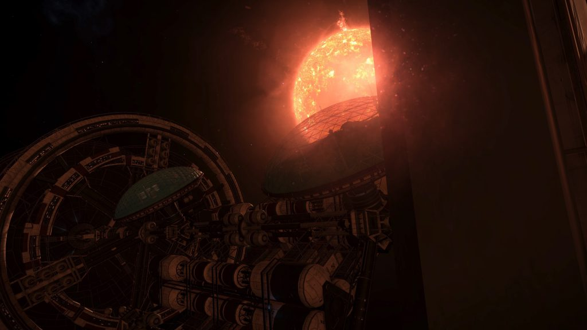
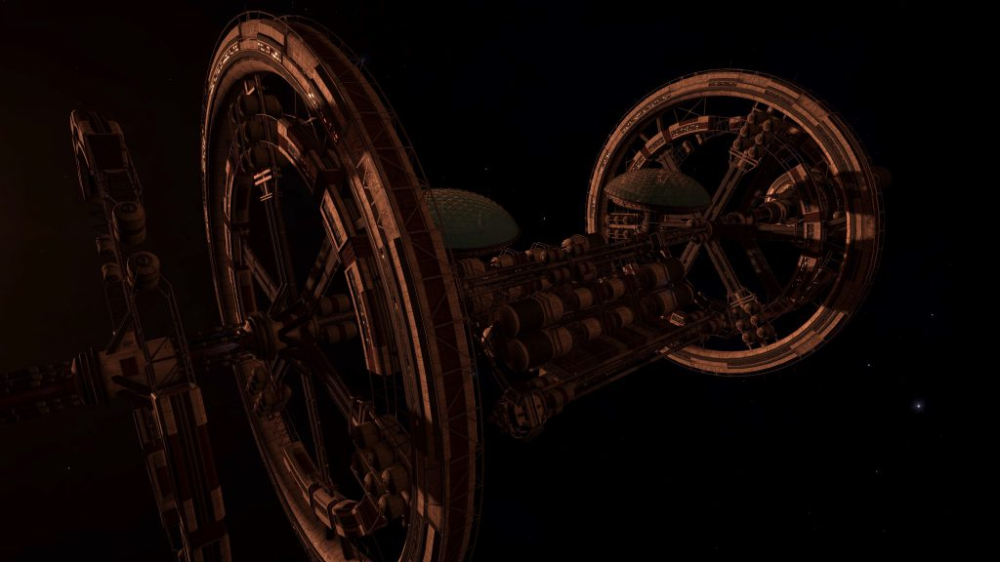

Odysseus is an abandoned Generation Ship that can be found in the Ross 859 system, in very low orbit of body B 1.
The ship was reported by CMDR DarkShadowLYNX (Source: Reddit)
The location is revealed by the Listening Post in the Alrai Sector WZ-P b5-6 system, orbiting body A 4 (found by Commander DaftMav):
DISTANT SIGNAL DATA
…Transponder Signal ODY-670-A Detected…
Matching Signal Detected. Ross 859. Time Stamp Predates Parameters.
…decided…The mission…all members of the crew…all resources…9 B1…planetary colonisation mission…sustain us…all attempts…For the greater good.
…Signal Lost…

A series of five Ship Log Uplink points can be located along the hull. Deploy your ship’s hardpoints and use the onboard Data Link Scanner within 200m of each post to scan them and retrieve the logs. In addition to the text, each log is accompanied by an audio recording:
OUR NEW EDEN 1/5
Odysseus Council Log: Order, order. I will have order in the house.
It is decided then.
The mission is changed.
We, the elected council of The Odysseus, decree that all members of the crew remain on board and all resources for the ill conceived planetary colonisation mission are to be reallocated to enable the Odysseus to sustain us.
Order, order.
Any and all attempts to leave the ship, question the council or otherwise reinstate the previous mission parameters, is to be considered a capital offence. For the greater good.
OUR NEW EDEN 2/5
Personal Log: First Officer
Why would we leave the safety of our ship for the unknown of an alien world?
We have everything we need here. No one goes without. We have sustainable food, water, medical supplies and power sources for all on board. This is our Eden, not some dust ball hurtling through the vacuum of space. It makes no sense to leave.
Besides we have no idea what we would find on these worlds, if we’d survive, if we’d be able to find food or water. There could be anything out there.
The ship’s council makes the law and they were right all those years ago. That’s why we elected them after all.
The Odysseus is our home and this is where we stay. For the greater good.
OUR NEW EDEN 3/5
Security Officer’s Log:
It’s been years since we’ve dealt with something like this and to be honest I’m not sure we can cope anymore.
Sickness has taken hold, we detected it too late. By the time we knew what it was, half the ship was infected. Rings A and C are no go areas, even for medical staff. Council orders. So many areas are quarantined off now we’re cut off from some of the ship’s key systems.
We should have been better prepared. It’s not the first outbreak we’ve had. Back in my dad’s day an epidemic flooded the ship after a meteor storm. There were riots and people getting sick. But we got through it. We rebuilt the farms, people got medicine and recovered. This… this is different.
The council has initiated martial law, the ship’s under curfew, and anyone found to be infected is locked up in the quarantine zones. They say it’s for the greater good, but I don’t know anymore. I can’t think straight.
OUR NEW EDEN 4/5
Security Officer’s Log:
If the sickness killing us all wasn’t bad enough, the council just gave the order, someone flicked a switch and they vented it all. Ring A, C, the med bays, the holding bays, all of it. Anywhere there was a sign of infection. Hundreds of people, sucked out into space. Hundreds more suffocated with no air. For the greater good.
We were raised to believe that the will of the council is absolute. They govern, they rule, for all of us. But this…
There’s talk of a movement to remove the council, they want to get off the ship to leave at the next habitable world. After all these years, none of us have any memory of anything but the Odysseus. It’s a dream. We wouldn’t know what to do if we got planetside. I’m fifth generation; all I know is this ship, the council, the laws. And I know that going down to an unknown planet would likely be the death of us all. Besides, it will never happen. The council won’t allow it. There is only one way off this ship.
OUR NEW EDEN 5/5
Ship Log Final entry:
They thought they had eradicated it. We all thought they had. We fought, for the greater good. We existed here, for the greater good. We mourned the lost ones, for the greater good. The council made peace, for the greater good. We exist, we remember, we mourn. All for the greater good.
Twenty years, we have existed.
But you can’t kill this, it hides, it retreats and mutates and comes at you again.
The same, but different. Stronger, more deadly.
Now there is nothing left; no people, no council, no laws, only the sickness.
I record this as a warning, do not board this ship. It is dead. Mourn those lost and remember, but do not set foot onboard this ship. For the greater good…
